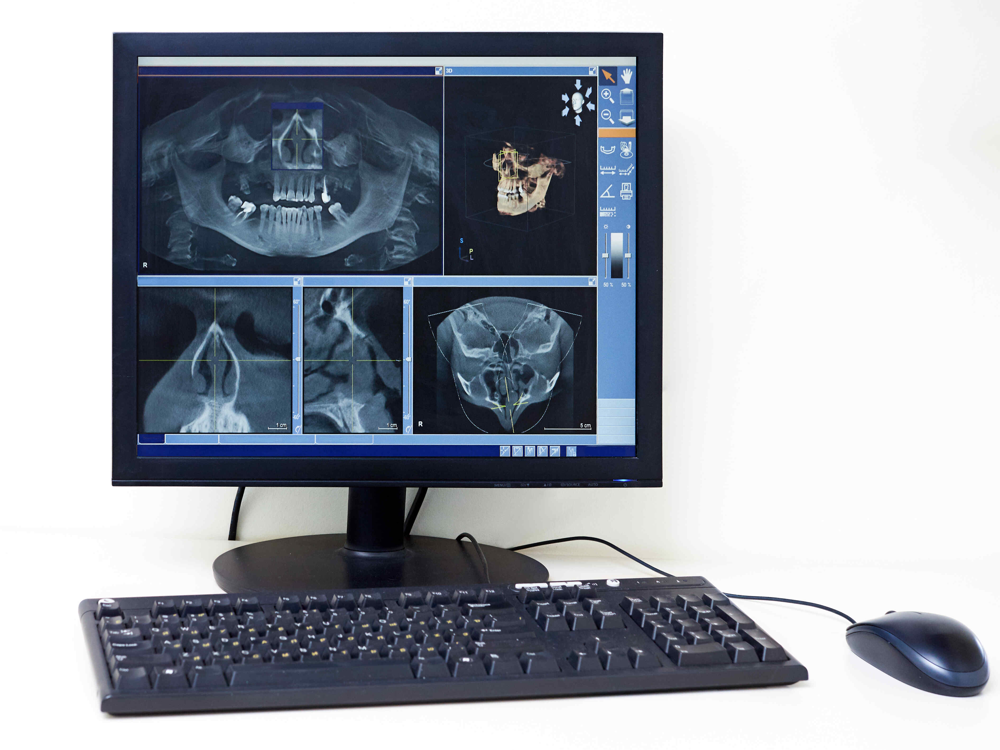

Comprehensive Dental Care
At 100SMILES Dental Care, we provide a full range of dental treatments to maintain healthy, beautiful smiles:
- General Dentistry: Check-ups, cleanings, fillings, and preventive care.
- Cosmetic Dentistry: Teeth whitening, veneers, and smile makeovers.
- Orthodontics: Braces and alignment solutions for all ages.
- Dental Implants: Permanent tooth replacement using advanced technology.
- Emergency Dentistry: Fast and reliable care for urgent dental problems.
Advanced Technology at 100SMILES
We use state-of-the-art dental technology to ensure precise, efficient and comfortable treatment for our patients.
- Gum Disease Therapy & Cavity Detection: Advanced tools are used to treat gum disease, detect cavities early and provide effective teeth whitening options.
- CAD/CAM Technology: Our computer-aided design and manufacturing system allows us to create crowns, bridges and veneers in a single visit, ensuring a perfect fit and natural appearance.
- 3D Printing: We create dental models, surgical guides and custom appliances with extreme accuracy using 3D printing technology.
- Teledentistry: We offer virtual consultations from the comfort of your home for advice, check-ups and treatment planning.
- Digital X-Rays: Our digital radiography system provides high-quality images with reduced radiation exposure for accurate diagnosis and treatment planning.
- Intraoral Cameras:Our intraoral cameras offer a detailed view of your mouth, allowing us to capture high-quality images of your teeth and gums. This technology enhances our ability to detect and diagnose dental problems early, and it also helps us to better explain treatment options to our patients.

Special Offers
- 25% discount on your next dental visit when you book through our online form
- Free Dental Check-up: Saturday 5th July from 9:00 AM (Limited slots available)
- 10% discount on your Annual Dental Check-Up until April 30